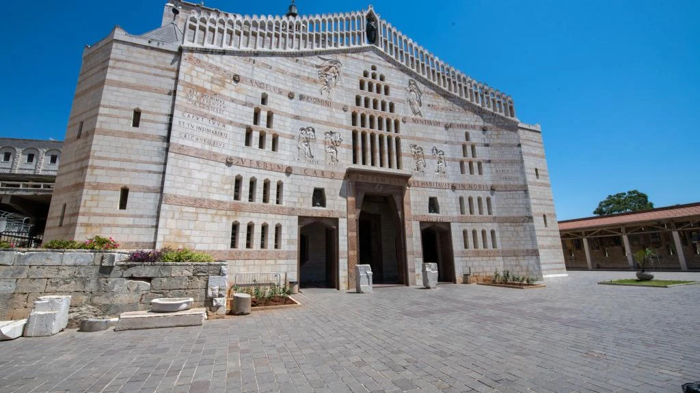
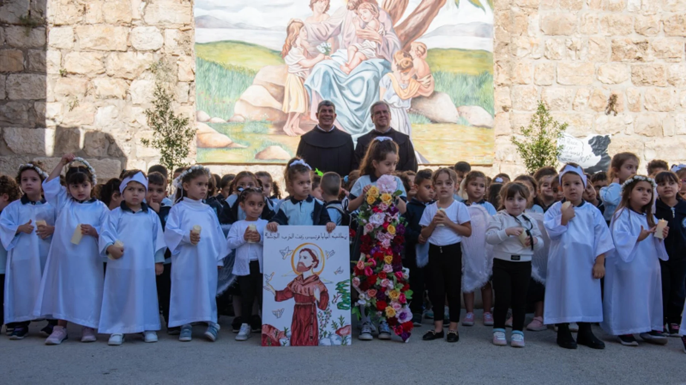
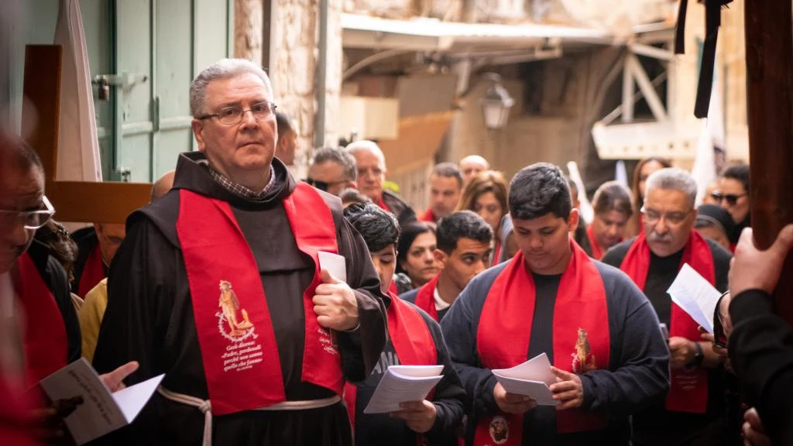
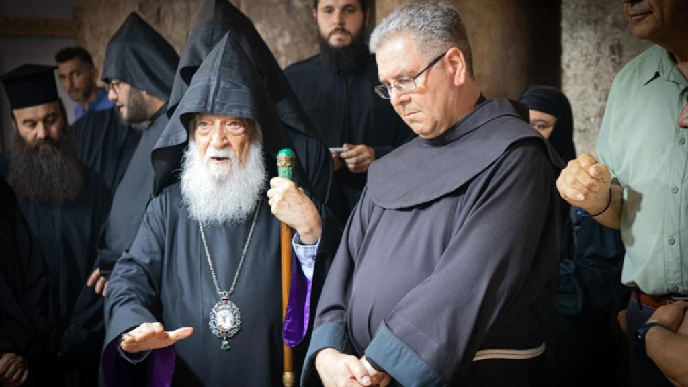

- 28santuarios en vídeo
- 8siglos de Custodia
- 503números de la revista
El recorrido
Cinco paradas en la vida de Jesús
De Belén a Jerusalén, sigue la ruta sobre la maqueta en relieve. En cada lugar descubrirás qué recordamos allí y cómo lo cuidan hoy los franciscanos.
Escucha Tierra Santa
Cierra los ojos un minuto
Grabaciones reales hechas por viajeros en los Santos Lugares. Ponte los cascos, pulsa y escucha cómo suena cada sitio.
Grabaciones de Freesound con licencias libres; autor y licencia en cada tarjeta. ¿Vas a peregrinar? Graba un minuto en silencio en cada santuario y lo añadimos.
Visitas en vídeo
Veintiocho santuarios para recorrer
Gira el carrusel y entra en cada santuario: un vídeo con música, una explicación sencilla y una reflexión para llevar contigo.
Cien años de la revista
El mismo lugar, un siglo después
Fotografías que publicó la revista Tierra Santa entre 1922 y 1932, frente a cómo es hoy cada santuario. Desliza cada imagen para pasar de entonces a ahora.
Fotos antiguas: revista Tierra Santa (Custodia Franciscana). Fotos actuales: Wikimedia Commons; autor y licencia en la ficha de cada santuario.
Objetos que cuentan
Mirar de cerca lo que el peregrino toca
Cuatro detalles de los Santos Lugares en fotografía real. Acércate, recorre la imagen y descubre lo que cuenta cada parte.
Línea del tiempo
De la antigüedad a hoy
Seis etapas en la historia de los Santos Lugares. Desliza: el tiempo avanza en profundidad.
Recreaciones visuales creadas con IA; no son fotografías documentales exactas.
Custodia de Tierra Santa
Una presencia que cuida, acoge y reza
Desde hace ocho siglos, los hermanos de san Francisco custodian los Santos Lugares. Rezan en ellos, reciben a los peregrinos, acompañan a las comunidades cristianas locales y sostienen escuelas y obras sociales.
- Oración en los santuarios, día tras día.
- Acogida de peregrinos de todo el mundo.
- Servicio a los cristianos de la tierra de Jesús.




Un siglo de nombres
Los frailes que pasaron por la revista
Custodios, arqueólogos, redactores, mártires y cronistas: los franciscanos que más aparecen en cien años de Tierra Santa, con los números donde puedes encontrarlos.
Recuento automático sobre el texto completo de 807 números; cada portada abre ese número en la hemeroteca oficial.
Revista Tierra Santa · desde 1921
Un siglo de revista, en una torre de portadas
Elige una década y gira la torre. Cada portada es una puerta a la hemeroteca oficial, donde puedes seguir leyendo.
Busca en el texto completo de 807 números (1921–2025). Verás en qué revistas aparece; cada portada te lleva a la hemeroteca oficial para leerla. Prueba:
Tu turno
Recorre la maqueta a tu ritmo
Gira, acerca y elige un lugar. Cada luz dorada señala santuarios que puedes visitar en vídeo.